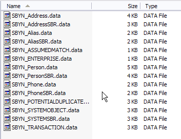
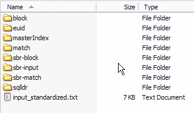

Performing the Bulk Match
After you perform the match analysis and are satisfied with the matching logic configuration, you are ready to match the full set of data to be loaded into the master index database.
Note - If you are using SQL*Loader to load the matched data, you can run the Bulk Matcher and the Bulk Loader all in the same step. For instructions on how to do this, see Running the Bulk Match and Bulk Load in One Step (SQL*Loader Only).
To Perform the Bulk Match
- Complete the steps under Performing a Match Analysis.
- From the master IBML Tool home directory, run cluster-truncate.sql against the cluster synchronizer database.
- For each IBML Tool, open loader-config.xml (located in the IBML Tool home directory in the conf subdirectory).
- Set the matchAnalyzerMode property to false.
- Verify that the rest of the properties are configured correctly, and then save
and close the file.
For information about the configurable properties, see Initial Bulk Match and Load Tool Configuration Properties.
- In the master IBML Tool home directory, do one of the following:
- On Windows, double-click run-loader.bat or type run-loader.bat from a command line.
- On UNIX, type IBML Toolsh run-loader.sh at the command line.
- Examine the log files in the logs directory of the IBML Tool home directory to verify that no errors occurred during the match process.
- Examine the files located in the masterIndex folder of your working directory to
be sure all tables were populated.
Figure 4 Master Index Image Files
 - If you configured the IBML Tool to keep the temporary folders in the
working directory, you can examine the blocking, EUID, and match files for additional
verification.
Figure 5 IBML Tool Working Directory
 - To load the data into the master index database, do one of
the following:
- To load the data using SQL*Loader, follow the instructions under Loading Data Using SQL*Loader.
- To load the data using the Data Integrator Bulk Loader, follow the instructions under Loading Data Using the Data Integrator Bulk Loader.